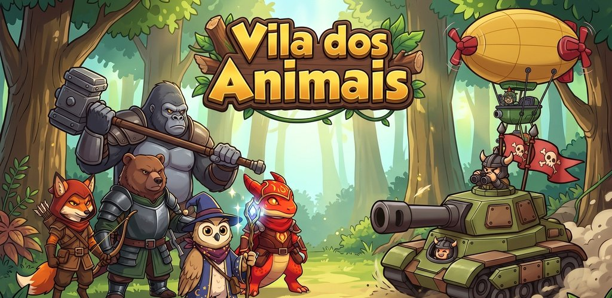
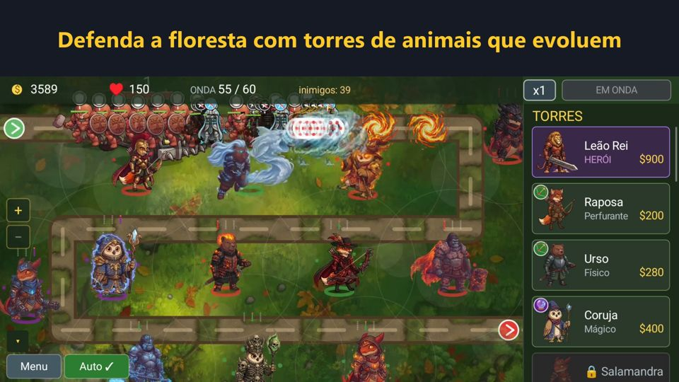
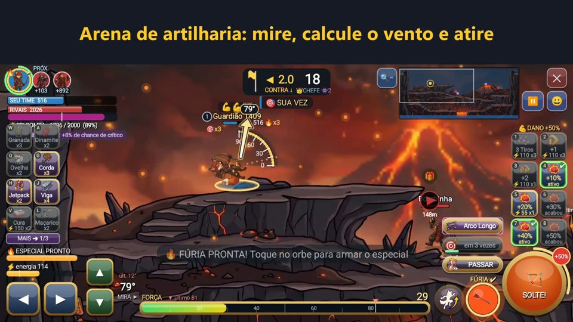
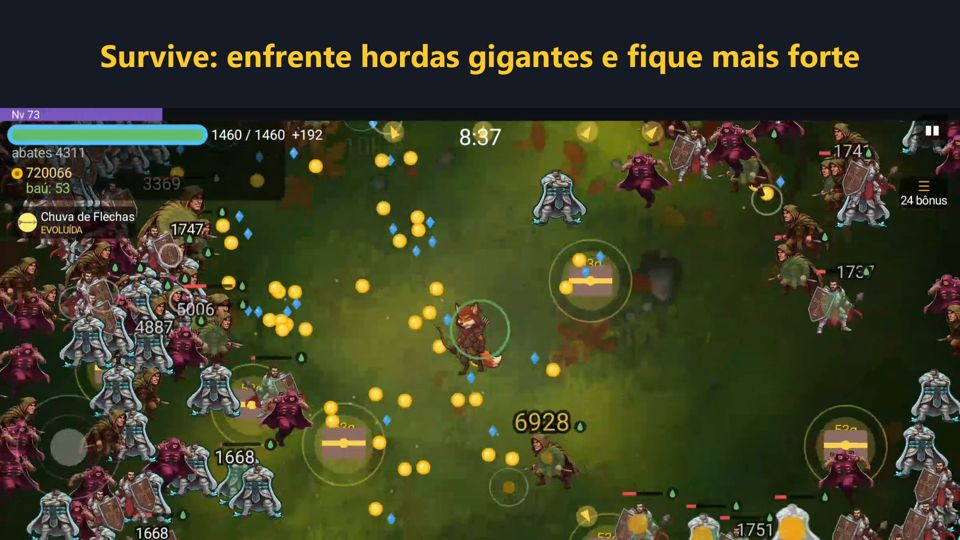
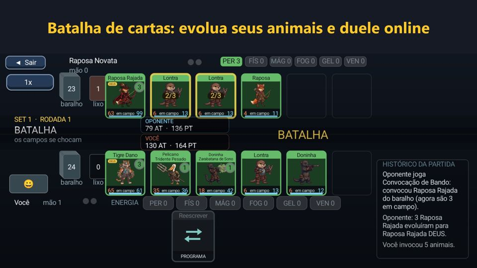
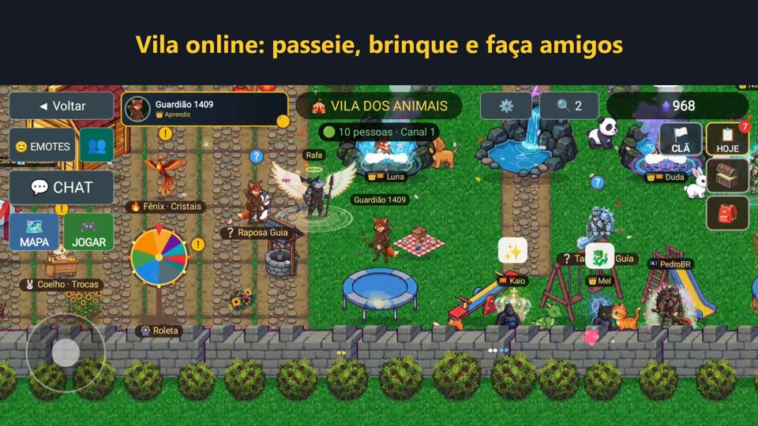
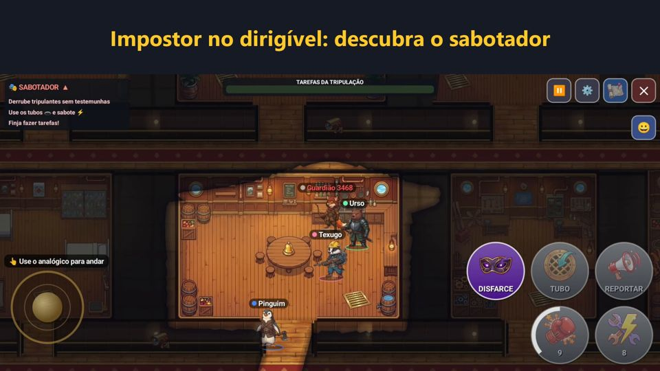
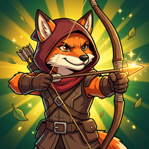

Os modos de jogo







Vários jogos em um só, com animais em pixel-art: defesa de torre, roguelike, survive, cartas, artilharia, impostor e uma vila online. Jogue offline ou com amigos.
Baixar grátis no Google Play





